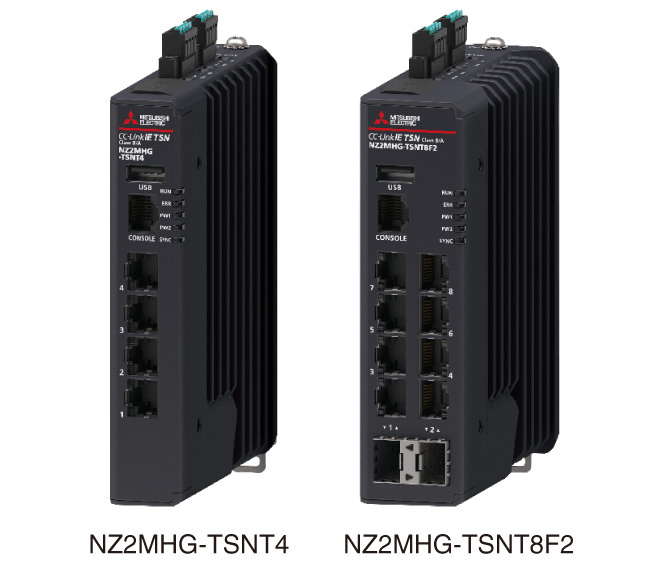
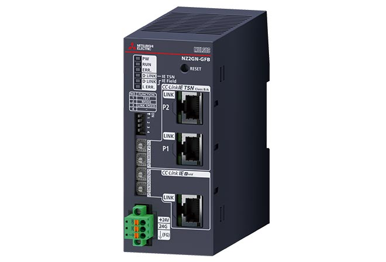
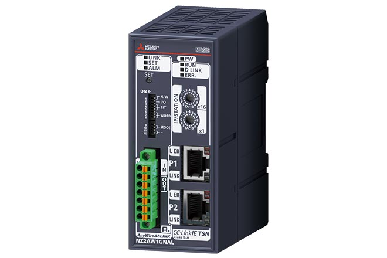

Network-related products |
Programmable Controllers MELSEC
CC-Link IE TSN Products

Managed Ethernet switches/bridge modules
Managed Ethernet switches
- Star topology can be configured with a managed Ethernet switch. NZ2MHG-TSNT4 is equipped with 4 Ethernet ports and NZ2MHG-TSNT8F2 is equipped with 8 Ethernet ports
- TCP/IP communication devices can be connected to empty Ethernet ports, enabling a highly-flexible advanced system
- Disruptions to the control system are kept to a minimum when an error occurs such as remote device failure and a cable disconnection
- Wiring distance between devices can be shortened, thereby reducing wiring cost. In addition, layout modification and addition/replacement of remote devices can be efficiently completed

This product was developed and manufactured by Moxa Inc.
Please note that the specifications and guarantee conditions of the products are different from the MELSEC Series products.
Bridge modules
CC-Link IE TSN - CC-Link IE Field Network bridge module
- Seamlessly integrates the CC-Link IE Field Network into CC-Link IE TSN
- Can be used as a remote station on CC-Link IE TSN and either as a master or local station on the CC-Link IE Field Network
- Enables CC-Link IE TSN devices to be added to the CC-Link IE Field Network *1
- Enables CC-Link IE Field devices to be added to CC-Link IE TSN
- *1.Since NZ2GN-GFB does not function as a CC-Link IE TSN master station, a separate master station is required on the CC-Link IE TSN network.

CC-Link IE TSN-AnyWireASLINK bridge module*2
- Seamlessly integrates AnyWireASLINK products into CC-Link IE TSN
- AnyWireASLINK is a reduced wiring network realizing monitoring of sensors and reduced installation space
- Supports iQSS (iQ Sensor Solution), which enables parameter setup and monitoring of AnyWireASLINK products
- *2.For further details, please refer to “DIGITAL LINK SENSOR AnyWireASLINK catalog (L(NA)08221E)”.
